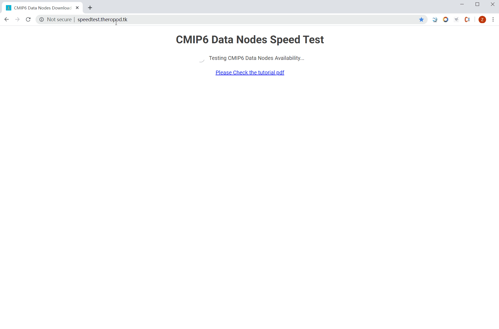

The Coupled Model Intercomparison Project, is now in its sixth phase (CMIP6). The project has proved invaluable in preparing high profile reports assessing our understanding of climate and climate change (e.g., the IPCC Assessment Reports).
This Chrome extension and webpage tests your download speed from all available cmip6 data nodes, and is telemetry enabled.
Data collected through this service is used to test the CMIP6 data accessibility in different regions of the world.
No personal information is disclosed to third parties.
At the end of the test, the following data is collected and stored:
If you have any question, please contact this email address : liuyufu18@mails.tsinghua.edu.cn.
Enter the speedtest page, and click 'test all' to run the test. You can also select any node you like and test its downloading speed by clicking 'test selected'
You can also get each test result through result url
Attention! This Extension is only for web development test, for security reasons, please remove it after test complete!
If you want to have your information deleted, you need to provide either the ID of the test or your IP
address. This is the only way to identify your data, without this information we won't be able to comply
with your request.
Contact this email address for all deletion requests: liuyufu18@mails.tsinghua.edu.cn.
This site tests your speed to download a file from all available cmip6 data nodes in browser:
Because most of the cmip6 data nodes are http(Although it is safer in https, it's impossible to force all of the nodes to upgrade). This speed test requires the browser to request those http resources, if this site is in https, the request would be blocked.